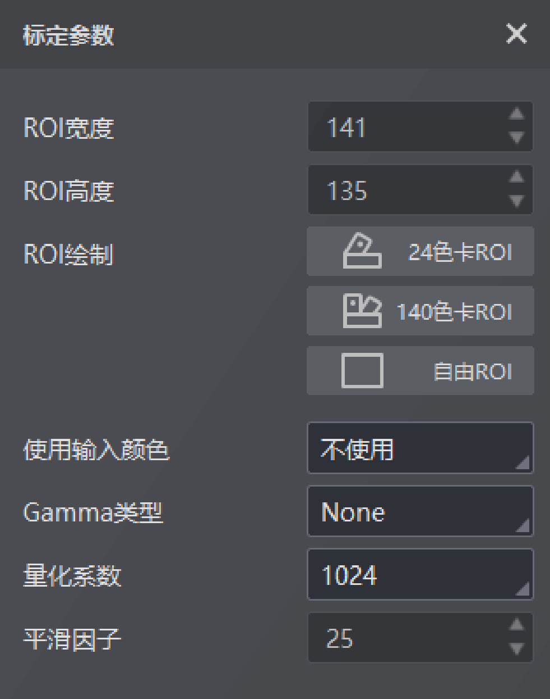

CLUT是一个三维的颜色查找表，可以针对特定的颜色进行调整，同时不影响其他颜色。
使用CLUT模块时需要进行标定和校正。
CLUT标定需要导入一张参考图，并对校正前图像和参考图绘制ROI，还需对以下参数进行设置：
根据图片场景不同，有24色卡ROI、140色卡ROI及自由ROI三种方式可选，具体介绍请参考图像降噪章节。
参数具体介绍请参考CCM章节。
参数具体介绍请参考CCM章节。
可将CLUT矩阵中的数值整数化，便于进行运算。
设置数值大小将影响CLUT校正的范围。

图 1 CLUT标定参数校正参数处可以对Gamma类型进行调整，具体方法与标定参数中相同。